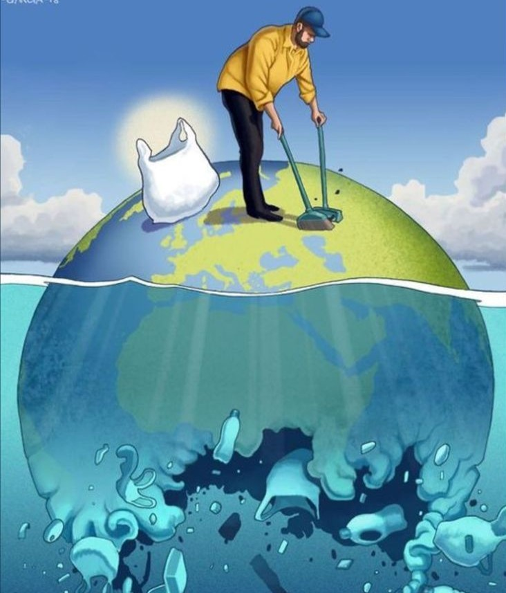
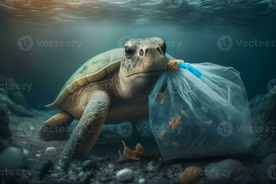
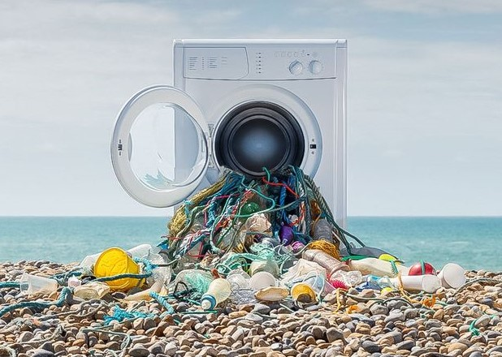
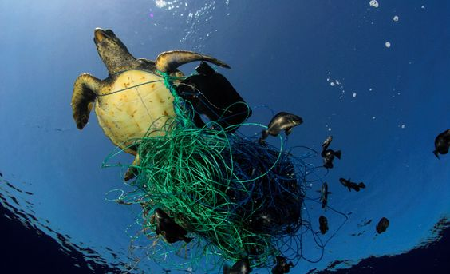
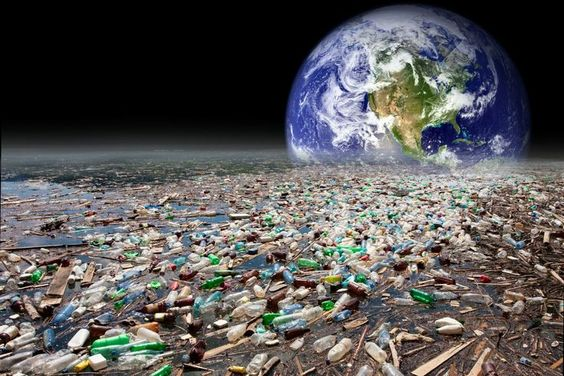

Introduction
Plastic pollution poses a grave threat to life below water, impacting marine ecosystems, biodiversity, and human well-being. This section explores how plastic debris adversely affects marine life and habitats.Plastic pollution in aquatic environments has emerged as a critical environmental issue due to the ubiquitous use of plastic materials in modern society. The introduction highlights the escalating human reliance on plastic, which is a major driving force behind the growing plastic pollution crisis. Despite the convenience and versatility of plastics, their improper disposal and mismanagement have led to the accumulation of vast quantities of plastic waste in oceans, rivers, lakes, and other water bodies. The presence of plastic debris in aquatic ecosystems poses severe threats to marine life and disrupts the delicate balance of underwater environments. Marine animals, ranging from microscopic organisms to larger species, are directly impacted by plastic pollution. Ingestion of plastic particles or entanglement in plastic debris can lead to malnutrition, injuries, and even death for these creatures. Additionally, plastic pollution can introduce toxic substances into the marine food chain, potentially bioaccumulating and magnifying as they move up the trophic levels.
Entanglement
Marine animals often become entangled in plastic debris, such as discarded fishing nets and plastic bags. This can lead to injuries, suffocation, and impaired mobility, resulting in reduced reproductive success and increased mortality rates.Entanglement caused by plastic pollution is a harrowing issue that afflicts marine life across the globe. As plastic debris accumulates in oceans, seas, and other water bodies, it creates a treacherous environment where aquatic animals become entangled, often with devastating consequences. This problem is pervasive and affects a wide range of species, from microscopic organisms to larger marine mammals, highlighting the extensive reach and severity of plastic pollution's impact. The entanglement hazard stems from the diverse forms and sizes of plastic debris present in marine environments. Common culprits include abandoned fishing nets, ropes, packaging materials, and other discarded plastic items. These materials can persist in the water for extended periods, drifting with ocean currents and posing risks to unsuspecting marine creatures. Even seemingly innocuous items, such as plastic rings from beverage containers, can become lethal traps for animals that inadvertently insert their heads or appendages through them. The consequences of entanglement can be severe and often result in prolonged suffering for the affected animals. Entanglement can restrict movement, impair essential functions like breathing and feeding, and cause deep lacerations as the animals struggle to free themselves. In some cases, the entangling debris can tighten around the animal's body, leading to constriction, loss of limbs, or even strangulation. Additionally, the ingestion of plastic debris during entanglement can cause internal injuries or blockages, further exacerbating the animal's distress.
Ingestion
Many marine species mistakenly ingest plastic particles, mistaking them for food. This can lead to digestive blockages, malnutrition, and toxicity due to the ingestion of harmful chemicals leached from plastics, ultimately affecting the health and survival of marine organisms.
Habitat Destruction
Plastic pollution can smother coral reefs, choke waterways, and disrupt marine habitats such as mangroves, seagrass beds, and kelp forests. This habitat destruction reduces biodiversity, alters ecosystem functioning, and threatens the resilience of marine ecosystems.Habitat destruction caused by plastic pollution is a grave threat to the delicate balance and biodiversity of marine ecosystems. The pervasive presence of plastic debris, from microplastics to larger items, has a profound impact on the physical and biological components of aquatic habitats, disrupting the intricate web of life that depends on these environments. One of the primary mechanisms through which plastic pollution destroys habitats is physical alteration. Plastic debris can accumulate in various marine habitats, such as coral reefs, seagrass beds, mangrove forests, and coastal areas. These accumulations can physically smother and damage sensitive organisms, hampering their growth, reproduction, and survival. Additionally, the abrasive nature of plastic particles can cause mechanical damage to reef structures, eroding their integrity and compromising the habitat for countless marine species. The impact of plastic pollution on habitats goes beyond physical damage. Microplastics, which are tiny plastic particles less than 5 millimeters in size, can be ingested by filter-feeding organisms and other marine life, leading to potential bioaccumulation and biomagnification of associated contaminants throughout the food web. This can have cascading effects, altering the composition and dynamics of entire ecosystems.
Toxicity
Plastics contain various chemical additives, some of which are toxic and can leach into the marine environment. These toxic chemicals can accumulate in marine organisms, leading to bioaccumulation and biomagnification along the food chain, posing risks to ecosystem health and human well-being.The toxicity associated with plastic pollution is a multifaceted and far-reaching issue that poses grave threats to the health and well-being of marine ecosystems and human populations alike. As plastic debris accumulates in oceans, seas, and other water bodies, it undergoes a complex series of chemical and physical processes that release a diverse array of toxic substances into the marine environment. One of the primary mechanisms through which plastic pollution contributes to toxicity is the leaching of chemical additives and plasticizers from the plastic materials themselves. During manufacturing, various chemicals are added to plastics to enhance their properties, such as flexibility, durability, and color. However, many of these additives, including bisphenol A (BPA), phthalates, and heavy metals, are known to be toxic and can have detrimental effects on living organisms. As plastic debris breaks down into smaller fragments and microplastics, the surface area-to-volume ratio increases, accelerating the release of these toxic additives into the surrounding waters. These chemicals can then be absorbed by marine organisms, either directly or through the food chain, leading to potential bioaccumulation and biomagnification up the trophic levels. Another mechanism contributing to the toxicity of plastic pollution is the adsorption of persistent organic pollutants (POPs) and other contaminants from the surrounding environment. Plastic debris acts as a sponge, attracting and concentrating various pollutants present in the water column and sediments, including polychlorinated biphenyls (PCBs), dioxins, and pesticides. These adsorbed pollutants can then be released into the marine environment as the plastic breaks down, further exacerbating the toxic burden.
